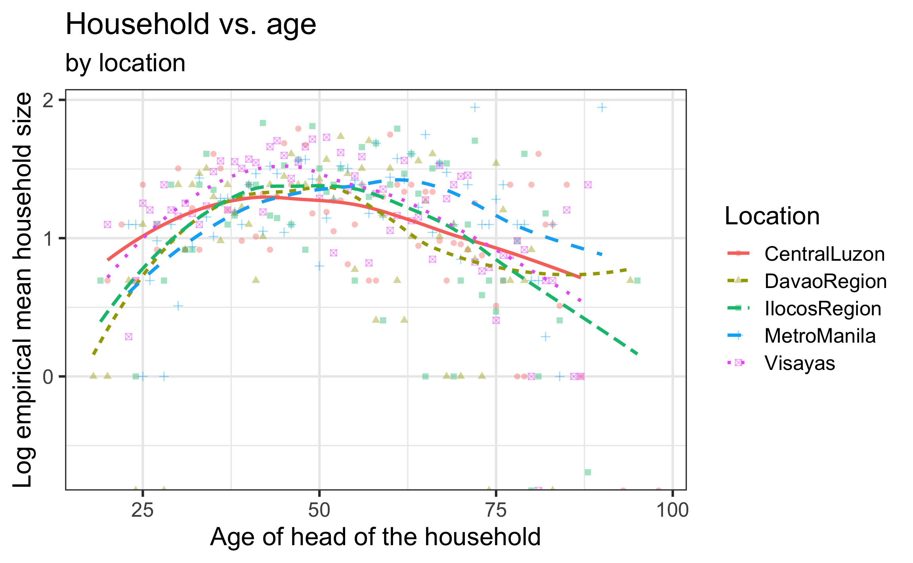
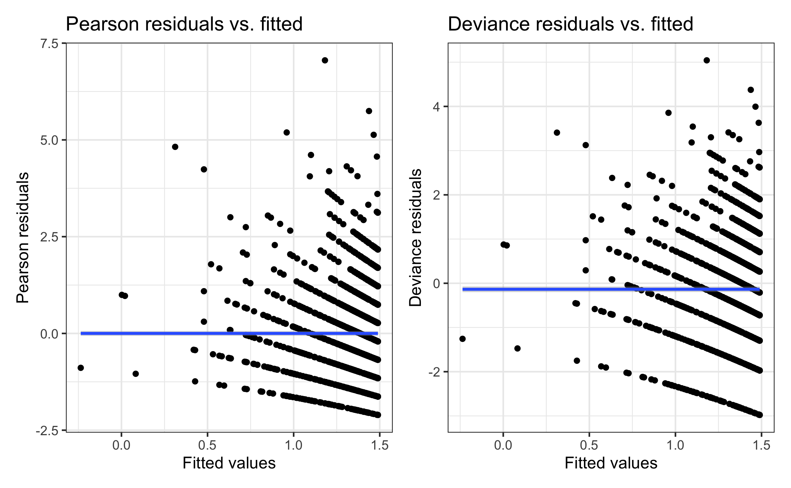

| term | estimate | std.error | statistic | p.value |
|---|---|---|---|---|
| (Intercept) | 1.5499 | 0.0503 | 30.8290 | 0 |
| age | -0.0047 | 0.0009 | -5.0258 | 0 |
Poisson Regression
Goodness-of-fit & overdispersion
Prof. Maria Tackett
Jan 29, 2024
Announcements
Quiz 01: Tue, Jan 29 ~ 9am - Thu, Jan 31 at noon
The quiz is not timed and will be administered through Canvas
Covers:
Syllabus
Covers readings & lectures: Jan 17 - 24
Open book, open note, open internet (not crowd-sourcing sites or AI). You may not discuss the quiz with anyone else. See policy in syllabus.
Please email me or send a me a direct message on Slack if you have questions.
Topics
Define and calculate residuals for the Poisson regression model
Use Goodness-of-fit to assess model fit
Identify overdispersion
Apply modeling approaches to deal with overdispersion
Quasi-Poisson
Negative binomial
The data: Household size in the Philippines
The data fHH1.csv come from the 2015 Family Income and Expenditure Survey conducted by the Philippine Statistics Authority.
Goal: Understand the association between household size and various characteristics of the household
Response:
total: Number of people in the household other than the head
Predictors:
location: Where the house is locatedage: Age of the head of householdroof: Type of roof on the residence (proxy for wealth)
Other variables:
numLT5: Number in the household under 5 years old
Poisson regression model
If \(Y_i \sim Poisson\) with \(\lambda = \lambda_i\) for the given values \(x_{i1}, \ldots, x_{ip}\), then
\[\log(\lambda_i) = \beta_0 + \beta_1 x_{i1} + \beta_2 x_{i2} + \dots + \beta_p x_{ip}\]
Each observation can have a different value of \(\lambda\) based on its value of the predictors \(x_1, \ldots, x_p\)
\(\lambda\) determines the mean and variance, so we don’t need to estimate a separate error term
Household vs. Age
\[\log(\hat{\lambda}) = 1.5499 - 0.0047 ~ age\]
The mean household size is predicted to decrease by 0.47% (multiply by a factor of \(e^{-0.0047}\)) for each year older the head of the household is.
Household vs. age and location

Add \(age^2\) and \(location\) to model?
Selected model
| term | estimate | std.error | statistic | p.value | conf.low | conf.high |
|---|---|---|---|---|---|---|
| (Intercept) | -0.3843 | 0.1821 | -2.1107 | 0.0348 | -0.7444 | -0.0306 |
| age | 0.0704 | 0.0069 | 10.1900 | 0.0000 | 0.0569 | 0.0840 |
| I(age^2) | -0.0007 | 0.0001 | -10.9437 | 0.0000 | -0.0008 | -0.0006 |
| locationDavaoRegion | -0.0194 | 0.0538 | -0.3605 | 0.7185 | -0.1250 | 0.0859 |
| locationIlocosRegion | 0.0610 | 0.0527 | 1.1580 | 0.2468 | -0.0423 | 0.1641 |
| locationMetroManila | 0.0545 | 0.0472 | 1.1542 | 0.2484 | -0.0378 | 0.1473 |
| locationVisayas | 0.1121 | 0.0417 | 2.6853 | 0.0072 | 0.0308 | 0.1945 |
Does this model sufficiently explain the variability in the mean household size?
Goodness-of-fit
Pearson residuals
We can calculate two types of residuals for Poisson regression: Pearson residuals and deviance residuals
\[\text{Pearson residual}_i = \frac{\text{observed} - \text{predicted}}{\text{std. error}} = \frac{Y_i - \hat{\lambda}_i}{\sqrt{\hat{\lambda}_i}}\]
Similar interpretation as standardized residuals from linear regression
Expect most to fall between -2 and 2
Used to calculate overdispersion parameter (more on this soon)
Deviance residuals
- The deviance residual describes how the observed data deviates from the fitted model \[\text{deviance residual}_i = \text{sign}(Y_i - \hat{\lambda}_i)\sqrt{2\Bigg[Y_i\log\bigg(\frac{Y_i}{\hat{\lambda}_i}\bigg) - (Y_i - \hat{\lambda}_i)\Bigg]}\]
where
\[\text{sign}(Y_i - \hat{\lambda}_i) = \begin{cases} 1 & \text{ if }(Y_i - \hat{\lambda}_i) > 0 \\ -1 & \text{ if }(Y_i - \hat{\lambda}_i) < 0 \\ 0 & \text{ if }(Y_i - \hat{\lambda}_i) = 0 \end{cases}\]
- Good fitting models \(\Rightarrow\) small deviances
Selected model: Residual plots
Goodness-of-fit
Goal: Use the (residual) deviance to assess how much the predicted values differ from the observed values.
\[ \text{deviance} = \sum_{i=1}^{n}(\text{deviance residual})_i^2 \]
When a model is true, we expect
\[\text{deviance} \sim \chi^2_{df}\]
where \(df\) is the model’s residual degrees of freedom
- Question to answer: What is the probability of observing a deviance larger than the one we’ve observed, given this model sufficiently fits the data?
\[P(\chi^2_{df} > \text{ deviance})\]
Application exercise
Goodness-of-fit calculations
The probability of observing a deviance greater than 2187.8 is \(\approx 0\), so there is significant evidence of lack-of-fit.
Lack-of-fit
There are a few potential reasons for observing lack-of-fit:
Missing important interactions or higher-order terms
Missing important variables (perhaps this means a more comprehensive data set is required)
There could be extreme observations causing the deviance to be larger than expected (assess based on the residual plots)
There could be a problem with the Poisson model
Only one parameter \(\lambda\) to describe mean and variance
May need more flexibility in the model to handle overdispersion
Overdispersion
Overdispersion: There is more variability in the response than what is implied by the Poisson model
| mean | var |
|---|---|
| 3.685 | 5.534 |
| location | mean | var |
|---|---|---|
| CentralLuzon | 3.402 | 4.152 |
| DavaoRegion | 3.390 | 4.723 |
| IlocosRegion | 3.586 | 5.402 |
| MetroManila | 3.707 | 4.863 |
| Visayas | 3.902 | 6.602 |
Why overdispersion matters
If there is overdispersion, then there is more variation in the response than what’s implied by a Poisson model. This means
The standard errors of the model coefficients are artificially small
\(\Rightarrow\) The p-values are artificially small
\(\Rightarrow\) Could lead to models that are more complex than what is needed
We can take overdispersion into account by
- inflating standard errors by multiplying them by a dispersion factor
- using a negative-binomial regression model
Quasi-Poisson
Dispersion parameter
The dispersion parameter is represented by \(\phi\) \[\hat{\phi} = \frac{\sum_{i=1}^{n}(\text{Pearson residuals})^2}{n - p}\]
where \(p\) is the number of terms in the model (including the intercept)
If there is no overdispersion \(\hat{\phi} = 1\)
If there is overdispersion \(\hat{\phi} > 1\)
Accounting for dispersion
- We inflate the standard errors of the coefficient by multiplying the variance by \(\hat{\phi}\)
\[SE_{Q}(\hat{\beta}) = \sqrt{\hat{\phi}} * SE(\hat{\beta})\]
“Q” stands for quasi-Poisson, since this is an ad-hoc solution - The process for model building and model comparison is called quasilikelihood (similar to likelihood without exact underlying distributions)
Quasi-Poisson model
| term | estimate | std.error | statistic | p.value | conf.low | conf.high |
|---|---|---|---|---|---|---|
| (Intercept) | -0.3843 | 0.2166 | -1.7744 | 0.0762 | -0.8134 | 0.0358 |
| age | 0.0704 | 0.0082 | 8.5665 | 0.0000 | 0.0544 | 0.0866 |
| I(age^2) | -0.0007 | 0.0001 | -9.2000 | 0.0000 | -0.0009 | -0.0006 |
| locationDavaoRegion | -0.0194 | 0.0640 | -0.3030 | 0.7619 | -0.1451 | 0.1058 |
| locationIlocosRegion | 0.0610 | 0.0626 | 0.9735 | 0.3304 | -0.0620 | 0.1837 |
| locationMetroManila | 0.0545 | 0.0561 | 0.9703 | 0.3320 | -0.0552 | 0.1649 |
| locationVisayas | 0.1121 | 0.0497 | 2.2574 | 0.0241 | 0.0156 | 0.2103 |
Poisson vs. Quasi-Poisson models
| term | estimate | std.error |
|---|---|---|
| (Intercept) | -0.3843 | 0.1821 |
| age | 0.0704 | 0.0069 |
| I(age^2) | -0.0007 | 0.0001 |
| locationDavaoRegion | -0.0194 | 0.0538 |
| locationIlocosRegion | 0.0610 | 0.0527 |
| locationMetroManila | 0.0545 | 0.0472 |
| locationVisayas | 0.1121 | 0.0417 |
| estimate | std.error |
|---|---|
| -0.3843 | 0.2166 |
| 0.0704 | 0.0082 |
| -0.0007 | 0.0001 |
| -0.0194 | 0.0640 |
| 0.0610 | 0.0626 |
| 0.0545 | 0.0561 |
| 0.1121 | 0.0497 |
Quasi-Poisson: Inference for coefficients
| term | estimate | std.error |
|---|---|---|
| (Intercept) | -0.3843 | 0.2166 |
| age | 0.0704 | 0.0082 |
| I(age^2) | -0.0007 | 0.0001 |
| locationDavaoRegion | -0.0194 | 0.0640 |
| locationIlocosRegion | 0.0610 | 0.0626 |
| locationMetroManila | 0.0545 | 0.0561 |
| locationVisayas | 0.1121 | 0.0497 |
\[t = \frac{\hat{\beta} - 0}{SE_{Q}(\hat{\beta})} \sim t_{n-p}\]
Quasi-Poisson model
| term | estimate | std.error | statistic | p.value | conf.low | conf.high |
|---|---|---|---|---|---|---|
| (Intercept) | -0.3843 | 0.2166 | -1.7744 | 0.0762 | -0.8134 | 0.0358 |
| age | 0.0704 | 0.0082 | 8.5665 | 0.0000 | 0.0544 | 0.0866 |
| I(age^2) | -0.0007 | 0.0001 | -9.2000 | 0.0000 | -0.0009 | -0.0006 |
| locationDavaoRegion | -0.0194 | 0.0640 | -0.3030 | 0.7619 | -0.1451 | 0.1058 |
| locationIlocosRegion | 0.0610 | 0.0626 | 0.9735 | 0.3304 | -0.0620 | 0.1837 |
| locationMetroManila | 0.0545 | 0.0561 | 0.9703 | 0.3320 | -0.0552 | 0.1649 |
| locationVisayas | 0.1121 | 0.0497 | 2.2574 | 0.0241 | 0.0156 | 0.2103 |
Application exercise
Negative binomial regression model
Negative binomial regression model
Another approach to handle overdispersion is to use a negative binomial regression model
- This has more flexibility than the quasi-Poisson model, because there is a new parameter in addition to \(\lambda\)
Let \(Y\) be a negative binomial random variable, \(Y\sim NegBinom(r, p)\), then
\[\begin{align}P(Y = y_i) = {y_i + r - 1 \choose r - 1}(1-p)^{y_i}p^r \hspace{5mm} y_i = 0, 1, 2, \ldots, \infty \\ E(Y) = \frac{r(1-p)}{p} \hspace{8mm} SD(Y) = \sqrt{\frac{r(1-p)}{p^2}}\end{align}\]
Negative binomial regression model
Main idea: Generate a \(\lambda\) for each observation (household) and generate a count using the Poisson random variable with parameter \(\lambda\)
- Makes the counts more dispersed than with a single parameter
Think of it as a Poisson model such that \(\lambda\) is also random \[\begin{aligned} &\text{If }\hspace{2mm} Y|\lambda \sim Poisson(\lambda)\\ &\text{ and } \lambda \sim Gamma\bigg(r, \frac{1-p}{p}\bigg)\\ &\text{ then } Y \sim NegBinom(r, p)\end{aligned}\]
Negative binomial regression in R
Use the glm.nb function in the MASS R package.
Caution
The MASS package has a select function that conflicts with the select function in dplyr. You can avoid this by (1) always loading tidyverse after MASS, or (2) use MASS::glm.nb instead of loading the package.
Negative binomial regression in R
hh_age_loc_nb <- MASS::glm.nb(total ~ age + I(age^2) + location, data = hh_data)
tidy(hh_age_loc_nb) |>
kable(digits = 4)| term | estimate | std.error | statistic | p.value |
|---|---|---|---|---|
| (Intercept) | -0.3753 | 0.2076 | -1.8081 | 0.0706 |
| age | 0.0699 | 0.0079 | 8.8981 | 0.0000 |
| I(age^2) | -0.0007 | 0.0001 | -9.5756 | 0.0000 |
| locationDavaoRegion | -0.0219 | 0.0625 | -0.3501 | 0.7262 |
| locationIlocosRegion | 0.0577 | 0.0615 | 0.9391 | 0.3477 |
| locationMetroManila | 0.0562 | 0.0551 | 1.0213 | 0.3071 |
| locationVisayas | 0.1104 | 0.0487 | 2.2654 | 0.0235 |
Negative binomial vs. Quasi-Poisson
| term | estimate | std.error |
|---|---|---|
| (Intercept) | -0.3843 | 0.2166 |
| age | 0.0704 | 0.0082 |
| I(age^2) | -0.0007 | 0.0001 |
| locationDavaoRegion | -0.0194 | 0.0640 |
| locationIlocosRegion | 0.0610 | 0.0626 |
| locationMetroManila | 0.0545 | 0.0561 |
| locationVisayas | 0.1121 | 0.0497 |
| estimate | std.error |
|---|---|
| -0.3753 | 0.2076 |
| 0.0699 | 0.0079 |
| -0.0007 | 0.0001 |
| -0.0219 | 0.0625 |
| 0.0577 | 0.0615 |
| 0.0562 | 0.0551 |
| 0.1104 | 0.0487 |
References
Roback, Paul, and Julie Legler. 2021. Beyond multiple linear regression: applied generalized linear models and multilevel models in R. CRC Press.